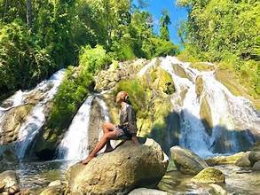
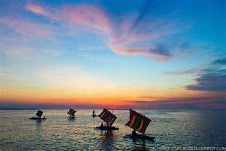
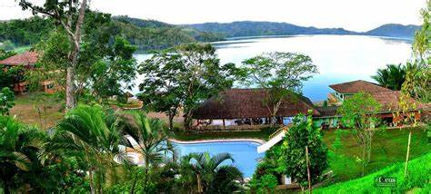

Overview
Zamboanga del Sur offers a range of tourist attractions from pristine islands and waterfalls to cultural sites and mountain trails. The province's natural beauty combined with its cultural diversity makes it a compelling destination in Mindanao.
Natural Wonders
The province is blessed with natural attractions including Pulacan Falls in Midsalip, Dao Dao Islands off the coast of Pagadian, and the challenging Mount Pinukis for trekking enthusiasts.
Beach and Island Tourism
The coastal and island destinations of the province are among its most visited. White sand beaches, clear waters, and rich coral reefs draw tourists seeking a relaxed beach experience away from more commercialized destinations.
Cultural and Heritage Tourism
The diverse culture of the province can be experienced through visits to indigenous communities, cultural centers, traditional markets, and participation in local festivals.
Ecotourism
The mountains and forests of the province offer opportunities for bird watching, jungle trekking, and river activities. The Zamboanga Mountain Range and its surrounding forests harbor endemic wildlife and spectacular scenery.
Tourism Development
Local government units and the provincial tourism office are actively promoting sustainable tourism development through infrastructure improvements and community-based tourism programs.
Key Facts
- Top Attraction: Dao Dao Islands
- Natural Attraction: Pulacan Falls, Mount Pinukis
- City Attraction: Pagadian City waterfront
- Best Time to Visit: March to May (dry season)
- Tourism Office: Pagadian City Tourism Office